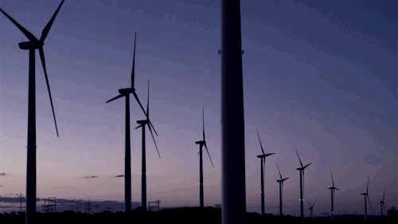

Energias renováveis são aquelas que irão se regenerar
espotaneamente com ou sem a intervenção humana, e de modo geral elas
são considerar limpas pois não deixam residuos significativos na
natureza. Exemplos:
— Energia solar – Obtida através do calor
e luz do sol.
— Energia eólica - Obtida através da rotação de
hélices em função do vento.
— Energia geotérmica - Obtida
através do calor proveniente do núcleo terrestre.
— Energia
hidrelétrica - Obtida através da cinética causada pela água em algum
sistema.
Já as energias não renovaveis são aquelas que quando
esgotadas já não podemmais ser renegeradas, pois como sua formação
depende da natureza, é um processo onde é necessário muito tempo.
Mesmo que encontradas em grandes quantidades na natureza diversas
vezes, continuam tendo reservas finitas, e de modo geral são
consideradas energias poluentes, porque o seu uso prejudica o
meio-ambiente de alguma maneira. Exemplos:
— Energia nuclear –
Obtida atrvés da fissão de matérias-primas como urânio.
—
Combustíveis fósseis - Obtida através da utilização de recursos como
petróleo, carvão mineral, gás natural e etc.

Com isso em base, precisamos começar a incentivar cada vez mais a
utilização de fontes que sejam renovaveis, é uma responsabilidade
nossa com o meio ambiente. Portanto é nosso dever cobrar das grandes
empresas que cada vez mais abandonem fontes finitas e poluentes, e
também é nosso dever nos adequarmos a essa sustentabilidade
energetica!
Se deseja saber mais sobre o assunto acesse à
ODS 7
da agenda 2030 de desenvolvimento sustentavel da ONU.
 Leonardo
Leonardo